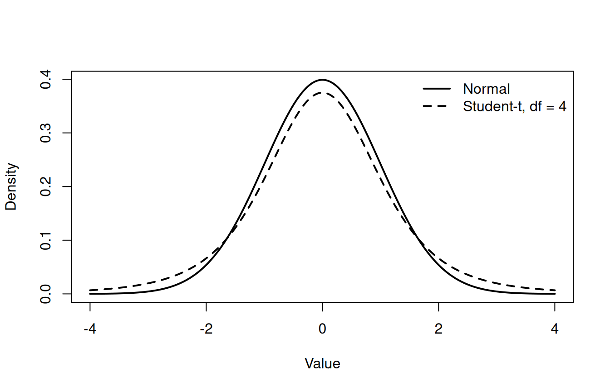

Code

The previous page assigned probabilities to allele-dosage values from one Mendelian cross. A genomic prediction analysis contains several kinds of uncertain quantity: a disease outcome may be binary, a genotype is discrete, and a residual or marker effect is usually represented on a continuous scale. No single probability model suits all of them. A probability distribution specifies the possible values of a random variable and how probability is allocated across those values.
A discrete random variable takes separate values that can be listed or counted. Its probability mass function, written \(P(X=x)\), assigns a probability to each possible value. The masses are nonnegative and sum to one.
A continuous random variable can take values throughout an interval. Its probability density function \(f(x)\) describes how probability is concentrated. Probability is an area under the density curve:
\[ P(a\leq X\leq b)=\int_a^b f(x)\,dx. \]
The height \(f(x)\) is not the probability of observing exactly \(x\). For a continuous model, \(P(X=x)=0\) for any single point, even where the density is high. A density may also exceed one as long as its total area is one.
A distribution’s parameters control properties such as location, spread, or shape. Their meanings depend on the distribution. For example, \(\pi\) is a success probability in a Bernoulli model, whereas \(\mu\) and \(\sigma\) locate and scale a normal model.
A Bernoulli distribution describes one outcome coded as 1 for success and 0 for failure. If \(X\) is a disease indicator and \(\pi\) is the probability of disease under the model,
\[ P(X=x)=\pi^x(1-\pi)^{1-x}, \qquad x\in\{0,1\}. \]
Its expectation is \(E(X)=\pi\) and its variance is \(\pi(1-\pi)\). Calling one outcome a success is only a mathematical convention. A disease case can be coded 1 without being desirable.
The Bernoulli model assumes the probability \(\pi\) is appropriate for the individual and setting being considered. If disease risk differs with family, environment, or management, one common value of \(\pi\) may be inadequate.
A binomial distribution counts successes in \(m\) Bernoulli trials. If the trials are independent and share a constant success probability \(\pi\), then
\[ P(X=x)={m\choose x}\pi^x(1-\pi)^{m-x}, \qquad x=0,1,\ldots,m. \]
Suppose five offspring independently have disease probability 0.2 under a hypothetical model. The probability that exactly two are affected is
\[ {5\choose2}(0.2)^2(0.8)^3 =10(0.04)(0.512)=0.2048. \]
The model can also describe an allele count when allele copies are treated as independent draws with a common frequency. That assumption may fail in inbred, structured, or selected populations. Related offspring may likewise have correlated risks, so a binomial calculation is not automatically valid for every family.
A categorical distribution assigns one outcome to one of \(K\) unordered classes. If class probabilities are \(\pi_1,\ldots,\pi_K\), then each \(\pi_k\geq0\) and \(\sum_{k=1}^{K}\pi_k=1\). Genotypes such as \(AA\), \(Aa\), and \(aa\) may be represented as categories when no numerical dosage structure is intended.
Later, BayesR will use a categorical distribution for a latent marker-effect class. The class label says which variance component generated an effect; the integers used to store labels do not imply that one class is numerically twice another.
The normal distribution with mean \(\mu\) and variance \(\sigma^2\) has density
\[ f(x)=\frac{1}{\sigma\sqrt{2\pi}} \exp\left[-\frac{(x-\mu)^2}{2\sigma^2}\right], \qquad -\infty<x<\infty. \]
Its symmetric bell shape places the mean, median, and mode at \(\mu\), while \(\sigma\) controls spread. Linear models often assume that residuals or polygenic effects follow a normal distribution. This is a model assumption, not a claim that every phenotype or marker effect in nature is normally distributed. Diagnostics and knowledge of how the trait was measured remain necessary.
The Student-t distribution is symmetric like the normal distribution but has heavier tails. Its degrees of freedom parameter \(\nu\) controls tail weight: smaller \(\nu\) places more probability far from the centre, and the distribution approaches a normal shape as \(\nu\) increases.
Heavy-tailed distributions can serve as models or priors when most marker effects are near zero but a few larger effects remain plausible. Choosing a Student-t model does not establish that the observed marker effects truly follow that distribution. It states which effect sizes the analysis regards as plausible before or while learning from data.

The curves share a centre and scale parameter. They do not share a variance: the standard normal variance is 1, whereas a Student-t variable with \(\nu=4\) and scale 1 has variance \(\nu/(\nu-2)=2\). The comparison isolates the practical consequence of heavier tails without asserting a universal marker-effect distribution.
A chi-squared distribution with \(\nu\) degrees of freedom describes the sum of squares of \(\nu\) independent standard normal variables:
\[ X=Z_1^2+\cdots+Z_\nu^2, \qquad Z_k\sim N(0,1). \]
It has support on nonnegative values and is right-skewed for small \(\nu\). Chi-squared distributions appear in variance inference and help motivate some prior distributions for variance components. Their use depends on normality and independence assumptions in the derivation; a nonnegative biological measurement is not chi-squared merely because its values cannot be negative.
R’s distribution functions use a consistent prefix: d evaluates a mass or density, p evaluates a cumulative probability, q returns a quantile, and r generates random values. The R distribution documentation lists the available families.
binomial_mass normal_density student_density chi_squared_density
0.2048000 0.2659615 0.3750000 0.2075537 The binomial result 0.2048 is a probability mass. The other three numbers are density heights and should not be read as probabilities at those exact points. An interval probability for a normal variable requires subtraction of cumulative probabilities. For example, if \(Y\sim N(0,1.5^2)\), then
This calculation gives the model probability that \(Y\) falls between -1 and 1. It is valid only to the extent that the specified normal distribution is a useful model for the quantity being studied.
It is simpler to calculate the complement. The probability that none is affected is \((1-0.1)^3=0.9^3=0.729\). Therefore, the probability that at least one is affected is \(1-0.729=0.271\).
The probabilities must be nonnegative and sum to one. They sum to \(0.80+0.15+0.05=1\). Because the classes are mutually exclusive, the probability of either of the last two is \(0.15+0.05=0.20\).
dnorm(1) does not answer the question.The interval probability is pnorm(1) - pnorm(-1), approximately 0.683. dnorm(1) is the height of the density at 1, not an area over the interval and not the probability of the single value 1.
A Bernoulli distribution models one binary outcome. Its probability parameter must be appropriate for the individual and setting; family, environment, or management differences can make one common value inadequate.
The Student-t distribution has heavier tails, especially at smaller degrees of freedom, so it assigns more probability far from its centre. This is a model choice, not proof that observed marker effects follow that distribution.
The p prefix returns a cumulative probability. A chi-squared variable is a sum of squared standard normal variables, and squares cannot be negative.
A probability distribution describes variation in repeated outcomes under a model. A dataset supplies only one realised sample. The next page examines how estimates change across samples, how standard errors quantify that variation, and what a confidence interval means.